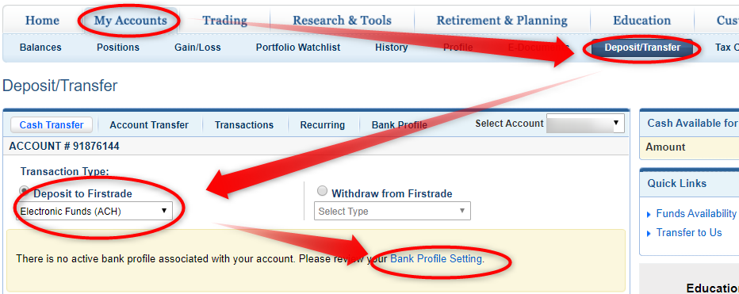

FirstradeでのACH送金手続き

Trancferwiseでのユニオンバンクへの送金も無事に完了したので、FirstradeにACH送金手続きしたときのメモ

ACH送金の手続きには送金元の銀行の最新の明細が必要
ユニオンバンクからFirstradeにACH送金の手続きをします。
手数料が無料
一度設定しておけば、ACH送金だと手数料が無料で簡単に送金できるようになるそうです。
送金元の銀行の最新の明細が必要になりますので、あらかじめ銀行から最新の明細を手に入れておきます。
ユニオンバンクの初回の明細は口座開設した月の月末に発行される。
私の場合は ユニオンバンクなので、オンラインでダウンロードできますが、9月始めに口座開設したばかりで、最新の明細ができたのが9月末だったので、それまで待ってました。
Firstradeにログインして早速手続きを開始。
まずFirstradeにログイン
MyAccounts > Balances > FUND MY ACCOUNT に行く
MyAccounts > Deposit/Transfer からでもOK
Deposit to Firstrade のドロップダウンから Electronic Funds (ACH)を選択し、右下 Bank Profile Setting をクリック
すると手続きの仕方が表示されますので、【STEP1】の Electronic Funds Trancefer (ACH) Form をダウンロードして記入します。
フォームの記入
フォームはこちら。＞ ACH_form_eng.doc
私は普通にプリントして手書きで記入し、スキャンしました。 中央付近のOptional Periodic Deposits以外の所をすべて記入。
Attach Original Voided Check Hereの所は必要ないと思う
一番下に、Attach Original Voided Check Here と書いてありましたが、持ってなかったので貼りませんでした。
スキャンしたPDFをアップロード
PDFで保存したら、 Customer Service > Form Crnter > Upload Form のタブにいって Drop Files Here にファイルをドロップして、さらにここで送金元の銀行の最新の明細も一緒にドラッグします。
書類の種類を指定する
すると、その下にアップロードする書類のリストが出てきて、書類の種類を選択しなければならないので、私は、 - ACH申し込みフォームの方は、ACH Electronic Funds Transfer Formを選択し、 - 送金元の銀行の最新の明細の方は、Customer Identificationを選択しました。
その後、右下のUpload Nowボタンを押してUploadします。
設定してもらうには2-3日かかる。お知らせメールは特に来ない
フォームの1ページ目に
The setup process typically takes 2-3 business days.
【2-3営業日で設定は完了します。】と書いてあったの ですが、2-3日待つことにしました。
2日後に下記の手順で確認してみると、

There is no active bank profile associated with your account. Please review your Bank Profile Setting.
となっているものの、【Bank Profile Setting】のリンクをクリックすると 下記のようなページに飛びます。
お知らせのメールとかが来なかったので、しばらく、There is no active bank....の表示を見て、まだ進んでないんだなって思ってしまってました。
送金テストを確認する。
これは、フォームの1ページ目に書いてあった、
You will receive two small deposits in your bank account from Firstrade. Please review your bank account activity and enter the two small deposit values in the “Bank Profile Setting” within 10 calendar days
これですね。銀行口座にFirstradeから少額の振り込みをするから、それを確認して、金額をBank Profile Settingから入力してね。10日以内にということでしょうか。
送金元銀行口座を確認する
早速銀行口座を確認。
確かにあります。 【Deposit #1】と【Deposit #2】に入力してConfirmボタンを押すと、
完了。テスト送金をしてみる。
無事完了！ 送金手数料は無料ということで、この後10ドルを送金してみました。 着金には2-3日かかるそうです。
【追記】着金確認
2日後に10ドルの着金を確認しました。